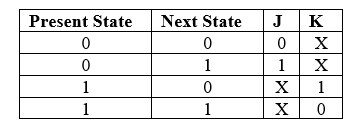

Design and implement 3-bit Up and 3-bit Down synchronous counters using master-slave JK flip-flop IC 7476.
counters are logical device or registers capable of counting the no of states or no of clock pulse arriving at its clock input where the clock is a timing parameter arriving at regular intervals of time, so counters can be also used to measure time & frequencies. They are made up of flip flops. Where the pulse are counted to be made of it goes up step by step & the o/p of the counter in the flip-flop is decoded to read the count to its starting step after counting n pulse incase of module & counters.
Types Of Counters:
Counters are of two types:
1] Synchronous counter
2] Asynchronous counter
1] Synchronous Counter:
When the counter is clocked such that each flip-flop in the counter is triggered at the same time, the counter is called as asynchronous counter. Synchronous binary counter have regular & can easily be constructed with complimentary flip flop & gates. The gates propagation delay at reset time will not be present or we may say will not occur.
Types Of Synchronous Counters:
1) Synchronous up counter
2) Synchronous down counter
3) Up-Down Counter
Applications:
- The synchronous counter is specially used as the counting devices.
- They are also used as counter to count the no of clock pulses applied.
- It also works for counting frequency & is used in frequency divider circuit.
- It is used in digital voltmeter.
- It is also used in counter type A to D converter.
- It is also used for time measurement.
- It is also used in digital triangular wave generator.
- It helps in counting the no of product coming out from machinery where product is coming out at equal interval of time.
The up counter counts from 0 to7 i.e.(000 to 111).for this we are using MS JK flip flop. In IC 74LS76, 2 MS J-K flip flops are present. The clock pulse is given at pin 1 & 6 of the 1st IC & pin 1 of 2nd IC. Next state decoder logic is designed with the help of state table.
State Table:
K-Maps:


Logic Diagram:
3 bit Synchronous down counter:
This is used to count from 7-0 i.e. (111-000).for this also 2 IC’s of 74LS76 are required & hence we use 3 MS JK flip flops. Here also clock is given to 1st& 6th pin of 1st IC &1st pin of 2nd IC enabling to apply clock to all flip flop at a time. Next state decoder logic is designed with the help of state table.
State Table:

K-Maps:

Logic Diagram:
3 bit controlled up down synchronous counter:
• Up Counter:
The up counter counts binary form 0 to7 i.e. (000 to 111). It counts from small to large number. It’s O/P goes on increasing as they receive clock pulse
• Down Counter:
This down counter counts binary from 7-0 i.e. (111-000). It counts from large to small number. It’s O/P goes on increasing as they receive clock pulse.
• Excitattion Table:
The tabular representation of the operation of flip flop (i.e: Operational Characteristic)

State Table:
For M = 0, it acts as an Up counter and for M =1 as an Down counter.
K-Maps:

Logic Diagram:
Follow the below steps
1. Connections were given as per circuit diagram.2. Logical inputs were given as per truth table.
3. Observe the logical output and verify with the truth tables.
Here you can embed an interactive simulation tool or provide links to simulation resources.
Q.1] What do you mean by Counter?
A Counter is a register capable of counting the no. of clock pulses arriving at its
clock inputs. Count represents the no. of clock pulses arrived. A specified sequence of states appears as the counter output.
br>
Q.2] What are the types of Counters? Explain each?
There are two types of counters as Asynchronous Counter and Synchronous Counter.
Asynchronous Counter: In this counter, the first flip-flop is clocked by the external clock pulse and then each successive flip-flop is clocked by the Q or Q’ o/p of the previous flip- flop. Hence in Asynchronous Counter flip-flops are not clocked simultaneously and hence called as Ripple Counter.
Synchronous Counter: In this counter, the common clock input is connected to all the flip-flops simultaneously.
Q.3] What are the advantages of synchronous counters over asynchronous counters?
- Propagation delay time is reduced.
- Can operate at a much higher frequency than the asynchronous counters.
Q.4] What is a 3-bit synchronous down counter?
A 3-bit synchronous down counter is a digital circuit that counts down from a preset value to zero using three flip-flops to represent the binary count. It operates synchronously, utilizing clock signals and synchronous logic to ensure precise counting in a downward sequence.
Q.5] How does a 3-bit synchronous down counter differ from an asynchronous counter?
Unlike asynchronous counters, which are prone to glitches and propagation delays, the 3-bit synchronous down counter operates synchronously. It utilizes clock signals to trigger the flip-flops and performs counting in a precise and synchronized manner.
Q.6] What are the applications of a 3-bit synchronous down counter?
The 3-bit synchronous down counter finds applications in digital timing circuits, frequency division, control signal generation, and sequential control systems. It is commonly used in devices that require accurate counting, sequencing, and synchronization.
- Reference 1: “Digital Fundamentals” by Floyd & Jain
- Reference 2: R. P. Jain, “Modern Digital Electronics”, 3rd Edition, Tata McGraw-Hill
- Reference 3: 3. Malvino, D.Leach“Digital Principles and Applications”, 5th edition, Tata McGraw- Hill